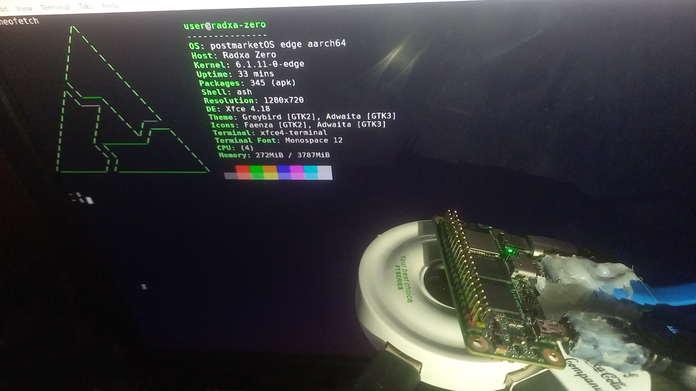

Radxa Zero (radxa-zero)
|
 Diy dock + Radxa Zero + External Display | |
| Manufacturer | Radxa |
|---|---|
| Name | Zero |
| Codename | radxa-zero |
| Released | 2021 |
| Category | testing |
| Original software | Android |
| Original version | 9 |
| postmarketOS kernel | linux-edge |
| Hardware | |
| Chipset | Amlogic S905Y2 |
| CPU | Quad Cortex-A53 1.8 GHz |
| GPU | Mali G31 MP2 |
| Display | MicroHDMI 2.1 - 4K@60 |
| Storage | None/8/16/32/64/128GB EMMC + SDCard |
| Memory | 512MB/1GB/2GB/4GB LPDDR4 |
| Architecture | aarch64 |
| Type | Single Board Computer |
| Unixbench Whet/Dhry score | 1657.2 |
{kind=link}
| USB Networking | |
|---|---|
| Flashing | |
| Touchscreen |
Unavailable
|
| Display |
Works
|
| WiFi |
Partial
|
| FDE |
Partial
|
| Mainline |
Works
|
| Battery |
Unavailable
|
| 3D Acceleration |
Works
|
| Audio |
Broken
|
| Bluetooth |
Works
|
| Camera |
Unavailable
|
| GPS |
Unavailable
|
| Mobile data |
Unavailable
|
| SMS |
Unavailable
|
| Calls |
Unavailable
|
| USB OTG |
Works
|
| NFC |
Unavailable
|
| Accelerometer |
Unavailable
|
|---|---|
| Magnetometer | |
| Ambient Light | |
| Proximity | |
| Hall Effect | |
| Barometer | |
| Power Sensor | |
| Camera Flash | |
|---|---|
| Keyboard | |
| Touchpad | |
| USB-A | |
| HDMI/DP | |
| Ir TX |
Unavailable
|
| Ir RX | |
| Stylus | |
| Haptics | |
| Ethernet | |
| FOSS bootloader | |
| Primary Bootloader |
Works
|
|---|---|
| Secondary Bootloader |
Unavailable
|
| Mainline |
Works
|
| Internal Storage |
Works
|
| SD card |
Works
|
| USB Host |
Works
|
| USB Peripheral |
Works
|
| Display |
Works
|
| Keyboard |
Works
|
| Buttons | |
Contents
Maintainer(s)
Contributors
Users owning this device
How to enter flash mode
| The way of boot into flash rom via hidden bootrom hdmi feature might work on this device. (see the see also section of amlogic page) |
hold down usb-boot button on back of pcb
How to use the boot rom
see Amlogic
Expose embedded eMMC as a USB Mass Storage device
Fellow https://wiki.radxa.com/Zero/dev/maskrom#Enable_maskrom
Installation
1. Follow the steps on Installation_guide#Initialization
2. Choose the radxa-zero device
3. Start the build process and install the completed image to a sdcard
$ pmbootstrap install --sdcard /dev/sdX
(replace /dev/sdX with the device for your sdcard or the emmc of it)
4. If you install pm os on sdcard , then Place the sdcard into the Radxa Zero and boot it. If not unplug the usb cable.
Boot process
If emmc is bootable :
bootrom ==> emmc ==> uboot ==> postmarketOS
Else if sdcard is bootable :
bootrom ==> emmc ==> uboot ==> postmarketOS
Else :
bootrom ==> flashmode
Wifi
Depend on your Radxa Zero, it might be had one of those Wi-Fi modules : AW-CM256SM(some of the Radxa Zero v1.5 had this),AP6256(Radxa Zero 2/4/8GB had this),AP6212(Radxa Zero 1024/512MB had this) so the wifi of your Radxa Zero might not work due to the wifi modules on your Radxa Zero isnt supported by the kernel or the firmware that is in the pm os.
As of now , the only Wi-Fi modules that seem to supported by the kernel and the firmware is AP6256.
See also
- pmaports!2948 Initial merge request (First Attempt)
- pmaports!3865 Initial merge request (Second Attempt)